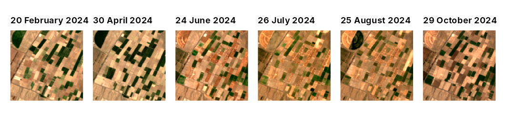
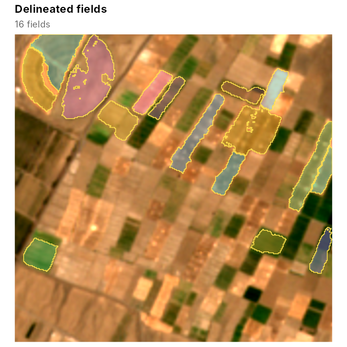
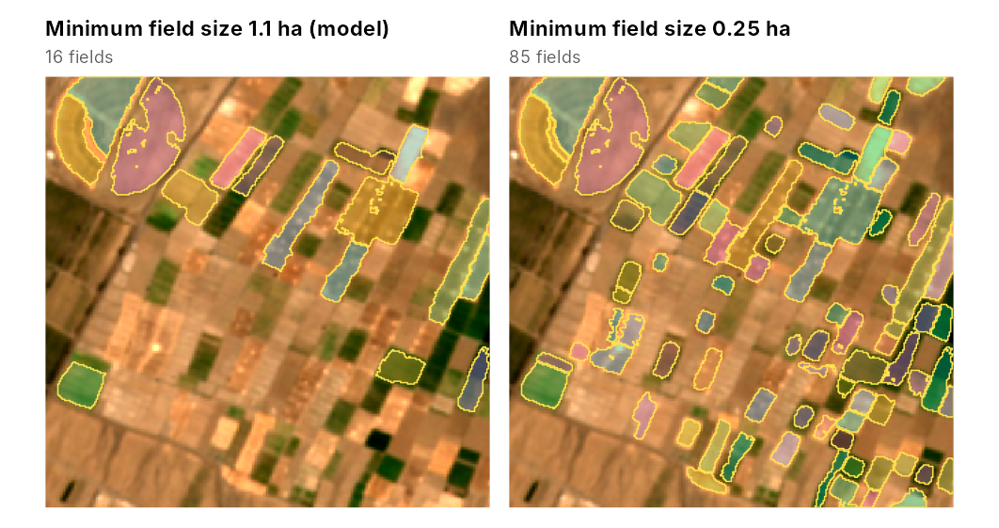
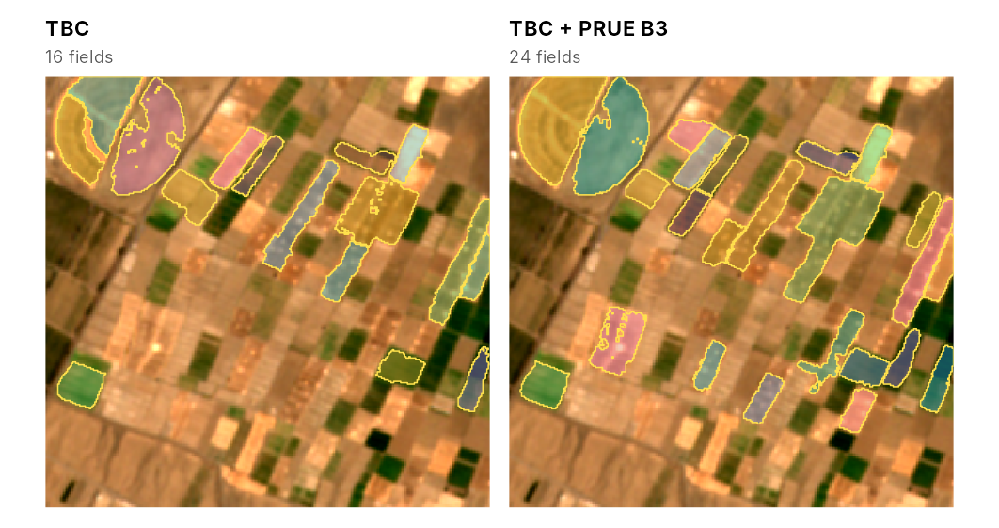

This article maps the fields of an area for which the package has no
data: about 1.6 by 1.6 km near Jovein, Khorasan Razavi, Iran, with a
centre pivot and many small rectangular plots, in 2024. Downloading
needs the rstac package and an internet connection, and the
deep model needs torch, so the code is not run when the
article is built. The output and the figures below were produced with
this code; the script that made them,
data-raw/vignette_new_area.R, is in the source
repository.
Download a monthly time series
fb_s2_monthly() searches the Microsoft Planetary
Computer catalogue for Sentinel-2 Level-2A scenes of the area. Among the
four scenes of each month with the least cloud cover, it keeps the one
with the fewest cloudy, shadowed or missing pixels in the area, and
resamples its ten bands to one grid in the UTM zone of the area, at 5 m
by default, the pixel size of the pretrained models:
library(fieldborders)
aoi <- c(57.436, 36.606, 57.454, 36.620) # longitude and latitude: west, south, east, north
s <- fb_s2_monthly(aoi, "2024-01-01", "2024-12-31", dir = "jovein_s2")
#> 48 scenes found; reading scene classifications
#> 12 months kept; reading 10 bands
s
#> <fb_stack> 314 x 324 pixels, 12 dates, 10 bands
#> dates : 2024-01-31 to 2024-12-26
#> bands : B02, B03, B04, B05, B06, B07, B08, B8A, B11, B12
#> scale : 10000
#> crs : WGS 84 / UTM zone 40N
#> clear : 100% 100% 100% 100% 100% 100% 100% 100% 100% 100% 100% 100%The download took 2.4 minutes. With dir, the scenes are
written as GeoTIFFs with an index table, so the series can be read again
later without downloading:
idx <- read.csv("jovein_s2/s2_index.csv")
s <- fb_read_stack(idx$image, bands = fb_example_bands(), dates = idx$date, clear = idx$clear)The scene identifiers are kept with the stack, for the record of a study:
attr(s, "items")[1:3]
#> [1] "S2A_MSIL2A_20240131T070121_R063_T40SEF_20240131T113906"
#> [2] "S2A_MSIL2A_20240220T065921_R063_T40SEF_20240220T113933"
#> [3] "S2B_MSIL2A_20240323T064629_R020_T40SEF_20240323T103903"Look at the images
library(patchwork)
wrap_plots(lapply(c(2, 4, 6, 7, 8, 10), function(k) fb_plot_rgb(s, date = k)), nrow = 1)
The scene classification that marks clear pixels misses some clouds,
haze and shadows, and it treats snow as clear (add class 11 to
invalid_classes to change this). If a date is visibly
affected, drop it before mapping, for example
s <- fb_subset_dates(s, fb_dates(s) != as.Date("2024-02-20")).
TBC uses the seasonal maximum and mean of its contrasts, so it needs no
fixed number of dates, but more dates help: in the California
validation, object F1 was 0.53 with two dates, 0.56 with four and 0.57
with twelve.
Fields from the pretrained model
res <- fb_fields(s) # pretrained "general" model and its thresholds
res$polygons
#> Simple feature collection with 16 features and 6 fields
#> Geometry type: POLYGON
#> Dimension: XY
#> Bounding box: xmin: 539020 ymin: 4051600 xmax: 540605 ymax: 4052820
#> Projected CRS: WGS 84 / UTM zone 40N
#> First 5 features:
#> field_id area_ha perimeter_m compactness mean_edge mean_cropland
#> 1 1 3.0325 1100 0.3149382 0.4988499 0.9299231
#> 2 2 1.9325 690 0.5100716 0.4472115 0.8929288
#> 3 3 3.9800 1220 0.3360263 0.4634693 0.9150371
#> 4 7 6.5050 2330 0.1505724 0.2882269 0.7485888
#> 5 15 2.2350 830 0.4076911 0.5003931 0.9149175
#> geometry
#> 1 POLYGON ((539055 4052750, 5...
#> 2 POLYGON ((539085 4051780, 5...
#> 3 POLYGON ((539110 4052820, 5...
#> 4 POLYGON ((539385 4052820, 5...
#> 5 POLYGON ((539470 4052480, 5...
fb_plot_fields(res$fields, s, date = 7, fill_alpha = 0.4)
Many plots here are smaller than the minimum field size of the
pretrained models, about 1.1 ha (m$thresholds$min_area, in
square metres). A smaller minimum keeps them, but it also keeps more
fragments of fields:
m <- fb_model_pretrained("general")
small <- fb_delineate(res$maps, thresholds = m$thresholds, min_area = 2500)
fb_plot_fields(res$fields, s, date = 7, fill_alpha = 0.4, title = "Minimum field size 1.1 ha (model)") +
fb_plot_fields(small, s, date = 7, fill_alpha = 0.4, title = "Minimum field size 0.25 ha")
Without reference fields, choose such settings by looking at the
result, or better, map a few fields by hand and tune the thresholds on
them with fb_tune().
Adding the deep model
fb_prue_predict() downloads the PRUE B3 model once
(about 54 MB) and runs it on two dates of the stack. The pretrained
fusion expects the months used to fit it, March and July; in the
southern hemisphere use the same stage of the season, for example
September and January.
dl <- fb_prue_predict(s, months = c(3, 7))
res2 <- fb_fields(s, dl = dl)
fb_plot_fields(res$fields, s, date = 7, fill_alpha = 0.4, title = "TBC") +
fb_plot_fields(res2$fields, s, date = 7, fill_alpha = 0.4, title = "TBC + PRUE B3")
With the deep model, 24 fields were delineated instead of 16. It added several of the narrow plots, but it also joined plots into one object in the centre, and many small plots are missing from both maps.
Export
sf::st_write(res2$polygons, "jovein_fields.gpkg")
terra::writeRaster(res2$maps, "jovein_maps.tif")The polygons carry their area in hectares, perimeter, compactness (4 pi area divided by the squared perimeter) and the mean edge and cropland probabilities inside each field.
Tips
- The deep model works on windows of 256 by 256 pixels (about 1.3 km at 5 m) and pads smaller areas by reflection, so map areas at least that large when using it; TBC works on any size.
- The pretrained models were fitted in irrigated and dryland
agriculture of California and Washington. Where reference fields exist,
train a local model (
vignette("training")) and check it on separate tiles (vignette("validation")). -
fb_s2_monthly()accepts ansfpolygon, a bounding box or aSpatRasterwhose grid is then used as is, for example to match an existing map.